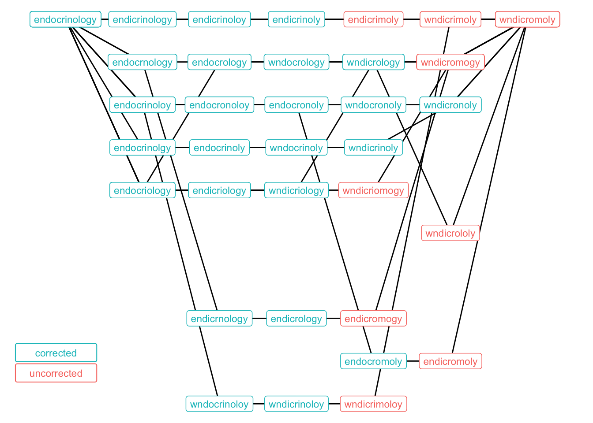
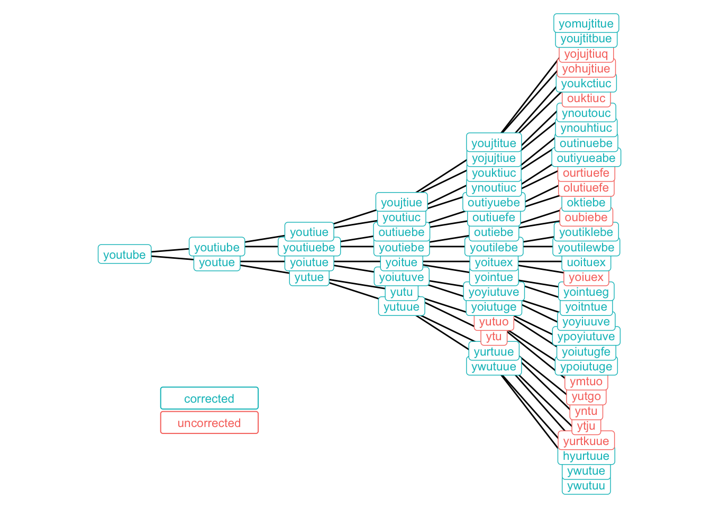

I only had a vague understanding of the word “endocrinology” when it popped up in a recent article, so I Googled it. Or at least, I tried to. Instead I typed “wndicromoly,” and was disappointed by the results, all due respect to Wendy Cromwell:

My expectation was that Google would either automatically redirect me to the right results or at least politely ask, “Did I mean: endocrinology?” So spoiled am I by autocorrect features on the web and in my phone that I was actually upset that Google couldn’t decrypt a keyword in which about half of the characters were typos.
But then I wondered: which of those typos had been the fatal blow? At what point had the word been mutated beyond recognition?
It helps to understand exactly how Google suggests corrections in the first place, as explained here in a talk given by their VP of Engineering. When users misspell their initial searches and then immediately search again without the typos, Google is able to associate those two inputs as an error and a correction, respectively. In other words, so many users have detoured from their intended search that they’ve worn a path in the ground from which Google can now rescue you.
So when I wonder which of my multiple errors doomed the search, I’m effectively asking at what point I’d created a term that nobody – or at least, not enough people – had typed before, leaving Google’s algorithms without any historical data and therefore no means to recognize my mistake.
Don’t like/know/care about R? Click here to skip to the results.
To answer this question, we begin by defining both the word and the typo and calculating the Levenshtein distance between them, which measures the minimum number of single-character edits (adds, deletions, or substitutions) to get from one string to another:
library(tidyverse)
library(data.tree)
library(httr)
word <- "endocrinology"
typo <- "wndicromoly"
distance <- adist(word, typo)Next we find a way to simulate typos. We start with a keyboard, which is a projection of the traditional QWERTY keyboard onto a matrix (only letters for now, let’s keep it simple), and a distance matrix d that holds the Euclidean distance between each pair of keys. For example, ‘g’ would be 1 away from ‘f’ but \(\sqrt{2}\) away from ‘y’.
The function fat_finger takes a letter and randomly samples from the rest of the keyboard, with probability weighted by proximity. So, using ‘g’ again as our example, the most likely typos would be ‘f,’ ‘t,’ ‘h,’ and ‘b,’ while very little probability would be given to distant letters like ‘q’ and ‘p’.
keyboard <- rbind(
c('q', 'w', 'e', 'r', 't', 'y', 'u', 'i', 'o', 'p'),
c('a', 's', 'd', 'f', 'g', 'h', 'j', 'k', 'l', NA),
c('z', 'x', 'c', 'v', 'b', 'n', 'm', NA, NA, NA)
)
d <- as.matrix(dist(expand.grid(1:nrow(keyboard),
1:ncol(keyboard))))
fat_finger <- function(letter){
# determine possible errors
idx <- keyboard != letter & !is.na(keyboard)
elements <- keyboard[idx]
distance <- d[which(keyboard == letter), idx]
# sample based on proximity
p <- exp(-distance)/sum(exp(-distance))
sample(elements, size = 1, prob = p)
}The fat_finger function is then used by the random_edit function to mutate a given word. Words can be modified in the three distinct fashions recognized by Levenshtein:
- deleting a letter
- adding a letter (split into adding before, and adding after)
- swapping one letter in for another
random_edit <- function(word){
# select where to put error
len <- nchar(word)
idx <- sample(1:len, 1)
# select type of error
type <- sample(1:4, 1)
# delete
if(type == 1) return(paste0(substr(word, 1, idx-1),
substr(word, idx+1, len)))
# add before
if(type == 2) return(paste0(substr(word, 1, idx-1),
fat_finger(substr(word, idx, idx)),
substr(word, idx, len)))
# add after
if(type == 3) return(paste0(substr(word, 1, idx),
fat_finger(substr(word, idx, idx)),
substr(word, idx + 1, len)))
# swap
if(type == 4) return(paste0(substr(word, 1, idx-1),
fat_finger(substr(word, idx, idx)),
substr(word, idx+1, nchar(word))))
}Finally, we can string individual mutations into a chain of errors with the make_ladder function, which recursively modifies a word until it becomes an intended typo. More explicitly, at every iteration the random_edit function is called until it finds a new word that is closer to the ultimate typo, as measured by Levenshtein distance.
make_ladder <- function(word, typo) {
# original distance
ldist <- as.vector(adist(word, typo))
# escape recursion once word becomes intended typo
if (ldist == 0) return(word)
# otherwise sample until a closer word is found
while(ldist >= as.vector(adist(word, typo))){
new <- random_edit(word)
ldist <- as.vector(adist(new, typo))
}
# chain together mutations
return(c(word, make_ladder(new, typo)))
}What does all this get us to? Well we can make a series of ladders (ten, for now) from our original word to the typo, with each element representing a single character update and a step away from my intentional query and toward the gibberish I actually entered. One such ladder is printed below:
set.seed(0)
n <- 10
ladders <- map(1:n, ~make_ladder(word, typo))
paste(ladders[[1]], collapse = " -> ")## [1] "endocrinology -> endocrinoloy -> wndocrinoloy -> wndicrinoloy -> wndicrimoloy -> wndicrimoly -> wndicromoly"Now we have to search for these misspelled terms to see which ones Google still associates with “endocrinology.” In theory we could try converting each string into a google.com URL and then scraping the relevant information, but that approach comes with the risk of having your IP address blocked once Google catches on.
So instead, we use Google’s Custom Search API. The API is designed to look within specific websites, but you can set it to search the entire web. Once we have an api_key and a cx, which identifies a specific custom search engine, we can wrap the functionality into a function google.
Note that this API’s free tier only allows 100 requests per day, and they can’t all be within the same 100 seconds, so a 2-3 second pause is built into the function.
google <- function(term,
api_key = google_search_api_key,
cx = google_search_cx,
pause = 2){
url <- "https://www.googleapis.com/customsearch/v1"
request <- GET(url, query = list(key = api_key, cx = cx, q = term))
# pause for a moment to stay within API limits
Sys.sleep(runif(1, pause, pause + 1))
content(request)
}
# find unique words in list of ladders and google them
terms <- unique(unlist(ladders))
search_results <- map(terms, google)Once we’ve (responsibly) retrieved the searches, we can traverse the JSON responses to determine which queries Google tried to amend, and what the suggested fixes actually were.
# look for suggested fixes in each result
corrected <- search_results %>%
map("spelling") %>%
map("correctedQuery") %>%
map(str_detect, word) %>%
modify_if(is_empty, ~FALSE) %>%
unlist()
corrected_df <- data.frame(term = terms,
corrected = corrected) %>%
mutate(corrected = corrected | term == word)
ladders_df <- data.frame(
step = rep(1:(distance+1), n),
ladder = rep(1:n, each = distance+1),
word = unlist(ladders)) %>%
inner_join(corrected_df, by = c('word' = 'term'))The graph below moves from left to right and determines when each ladder went from a salvageable typo to an unrecognizable one. There’s a fair amount of overlap in the paths since there are only so many high-probability mutations these terms can go through.
My instinct was that the ‘w’ in ‘wndicromoly’ was the culprit, although that thought is motivated from a linguistic standpoint, as I perceive ‘w’ to be a very different letter than ‘e’. But Google doesn’t really have trouble handling this error, probably since ‘wnd’ is a dead-end that no one ever really intends to type.
It appears, however, that turning the ‘logy’ at the end of the word into ‘mogy’ was the mortal wound for many of these ladders, as that’s where the cells turn red, indicating a lack of suggested fixes from Google.
(Note that the code to produce the graph is lengthy but not particularly interesting so I’ve hidden it, although it is available in the original .Rmd.)

Before we finish, let’s pretend we don’t know what typo we’re going to end up with and instead just start with an intended term. The function make_tree will recursively mutate a term n_children times until a given depth is reached. Let’s use the word “youtube” as our original word.
Still don’t like/know/care about R? Click here to skip to the (other) results.
make_tree <- function(word, depth, n_children){
# escape recursion once full depth is reached
if(depth == 1) return()
# otherwise create child mutations
children <- map(1:n_children, ~random_edit(word))
# ensure there are no duplicates
while(n_distinct(children) < n_children){
children <- children %>%
modify_at(which(duplicated(children)),
~random_edit(word))
}
# link nodes together
return(map(set_names(children), ~make_tree(.x, depth-1, n_children)))
}
word <- "youtube"
depth <- 6
n_children <- 2
set.seed(0)
tree <- make_tree(word, depth, n_children)We implement the same general process that was applied to the ladders, extracting the terms from the tree and using the API to see whether Google will suggest the intended query.
# transform tree structure into dataframe of edges
edges <- map_df(0:(depth-2), ~{
# get parents at each depth
parent <- tree %>%
modify_depth(.x-1, names) %>%
unlist() %>%
rep(each = n_children) %>%
unlist() %>%
unname()
if(.x == 0) parent <- rep(word, n_children)
# get children at each depth
word <- unname(unlist(tree %>% modify_depth(.x, names)))
data.frame(
parent = parent,
word = word,
depth = .x + 2
)}
) %>%
add_row(parent = NA, word = word, depth = 1)
# find unique words within the tree and google them
terms <- unique(edges$word)
search_results <- map(terms, google)
# look for suggested fixes in each result
corrected <- search_results %>%
map("spelling") %>%
map("correctedQuery") %>%
map(str_detect, word) %>%
modify_if(is_empty, ~FALSE) %>%
unlist()
corrected_df <- data.frame(term = terms,
corrected = corrected) %>%
mutate(corrected = corrected | term == word)The results are somewhat surprising, at least for me. Through four rounds of typos, all but two of the 16 mutated terms are still recognized as “youtube” by Google. One final iteration is enough to break the algorithm’s back in many cases, but queries like “oktiebe” and “hyurtuue” are still not beyond repair for the omnipotent search engine.
Of course, the cynic in you might argue that the engineers behind the algorithm have reason to tip the scales for terms that are in the neighborhood of YouTube, which was bought by Google in 2006. Is it possible that Google is a little overly helpful in nudging astray searches toward their own products?
(Again the graphing code is hidden. Again it is available in the original .Rmd.)

And that’s all for this post. Thanks for reading!